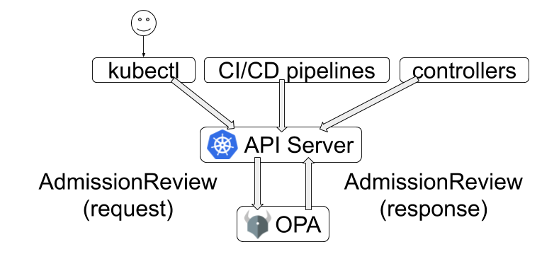

Opa gatekeeper
OPA Gatekeeper
- admission controllers
- require spesific labels on all resources
- require container image come from the coorporate image registry
- require all pods specify resource request and limits
- prevent conflicting ingress object from being created

Install gatekeeper
kubectl apply -f https://raw.githubusercontent.com/open-policy-agent/gatekeeper/release-3.4/deploy/gatekeeper.yaml
Gatekeeper menggunakan OPA Constraint framework untuk mendefinisikan policy.
Constraint
Constraint merupakan suatu difinisi agar suatu sistem memenuhi requirement dari author.
ex.
apiVersion: constraints.gatekeeper.sh/v1beta1
kind: FooSystemRequiredLabel
metadata:
name: require-billing-label
spec:
match:
namespace: ["expensive"]
parameters:
labels: ["billing"]
ketika constraint tersebut dideklarasikan, maka setiap resources yang ada pada namespace expensive diharuskan mempunyai label billing.
Constraint Template
Constraint template merupakan template yang nantinya digunakan oleh constraint untuk mendefinisikan policy.
ex.
apiVersion: templates.gatekeeper.sh/v1beta1
kind: ConstraintTemplate
metadata:
name: k8srequiredlabels
spec:
crd:
spec:
names:
kind: K8sRequiredLabels
validation:
# Schema for the `parameters` field
openAPIV3Schema:
properties:
labels:
type: array
items: string
targets:
- target: admission.k8s.gatekeeper.sh
rego: |
package k8srequiredlabels
violation[{"msg": msg, "details": {"missing_labels": missing}}] {
provided := {label | input.review.object.metadata.labels[label]}
required := {label | label := input.parameters.labels[_]}
missing := required - provided
count(missing) > 0
msg := sprintf("you must provide labels: %v", [missing])
}
Constraint template diatas merupakan definisi template yang digunakan oleh constraint sebelumnya, yang mengharuskan resource yang ada di suatu namespace mempunyai spesifik label.
Demo : 1. Create ConstraintTemplate.
vim ct-req-labels.yaml
...
apiVersion: templates.gatekeeper.sh/v1beta1
kind: ConstraintTemplate
metadata:
name: k8srequiredlabels
spec:
crd:
spec:
names:
kind: K8sRequiredLabels
validation:
# Schema for the `parameters` field
openAPIV3Schema:
properties:
labels:
type: array
items: string
targets:
- target: admission.k8s.gatekeeper.sh
rego: |
package k8srequiredlabels
violation[{"msg": msg, "details": {"missing_labels": missing}}] {
provided := {label | input.review.object.metadata.labels[label]}
required := {label | label := input.parameters.labels[_]}
missing := required - provided
count(missing) > 0
msg := sprintf("you must provide labels: %v", [missing])
}
...
Apply definition
kubectl apply -f ct-req-labels.yaml
- Create Constraint.
vim c-req-label.yaml
...
apiVersion: constraints.gatekeeper.sh/v1beta1
kind: K8sRequiredLabels
metadata:
name: ns-must-have-gk
spec:
match:
kinds:
- apiGroups: [""]
kinds: ["Namespace"]
parameters:
labels: ["name: gatekeeper"]
...
Apply definition
kubectl apply -f c-req-label.yaml
Constraint diatas akan membatasi pada saat kita membuat namespace. namespace yang dibuat harus mempunyai label gatekeeper
# kubectl create ns ci-cd
...
Error from server ([ns-must-have-gk] you must provide labels: {"gatekeeper"}): admission webhook "validation.gatekeeper.sh" denied the request: [ns-must-have-gk] you must provide labels: {"gatekeeper"}
...
apiVersion: templates.gatekeeper.sh/v1beta1
kind: ConstraintTemplate
metadata:
name: privilegedcontainer
spec:
crd:
spec:
names:
kind: PrivilegedContainer
targets:
- target: admission.k8s.gatekeeper.sh
rego: |
package privilegedcontainer
violation[{"msg": msg, "details": {}}]{
c := input_containers[_]
c.securityContext.privileged
msg := sprintf("Privileged container is not allowed: %v, securityContext: %v, [c.name, c.securityContext]")
}
input_containers[c]{
c := input.review.object.spec.containers[_]
}
input_containers[c]{
c := input.review.object.spec.initContainers[_]
}
apiVersion: constraint.gatekeeper.sh/v1beta1
kind: PrivilegedContainer
metadata:
name: privilegedcontainer
spec:
match:
kinds:
- apiGroups: [""]
apiVersion: ["v1"]
kinds: ["Pod"]